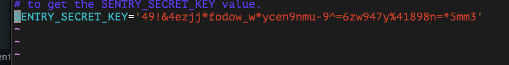
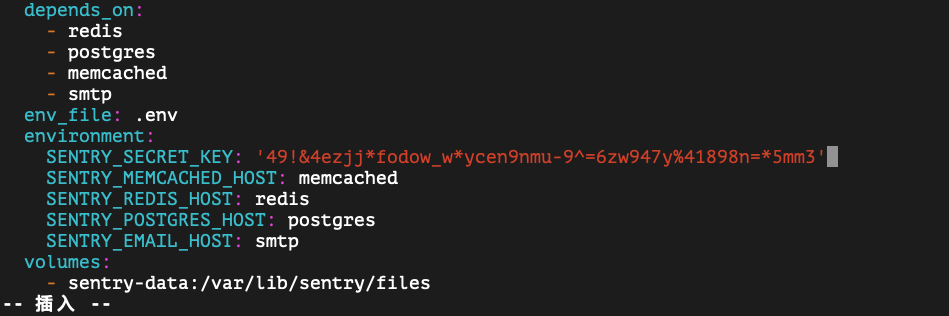
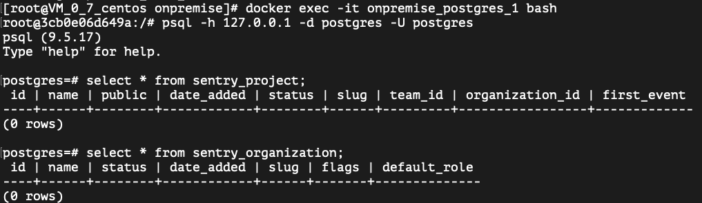
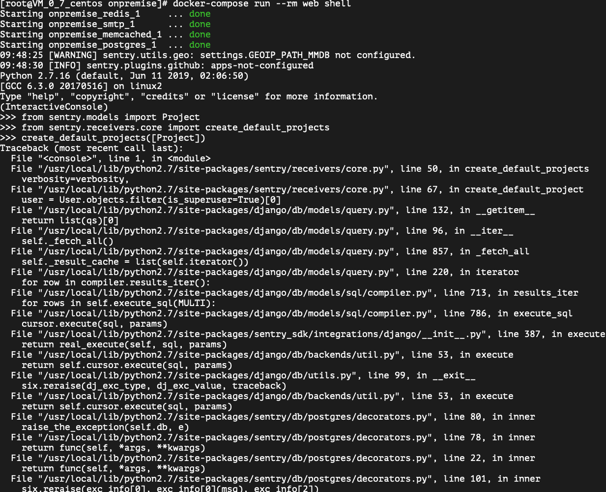
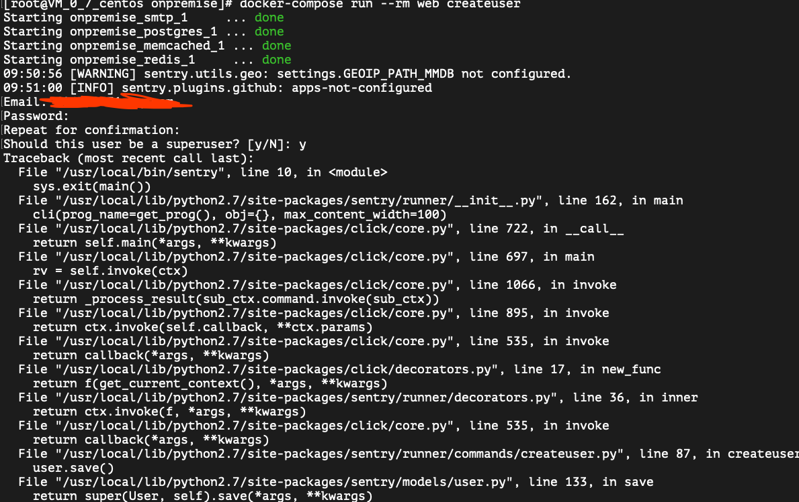
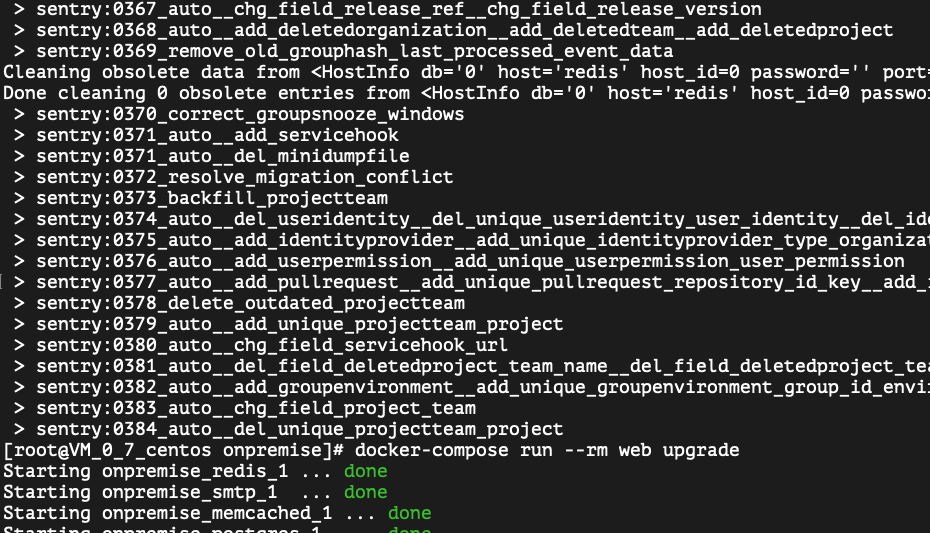
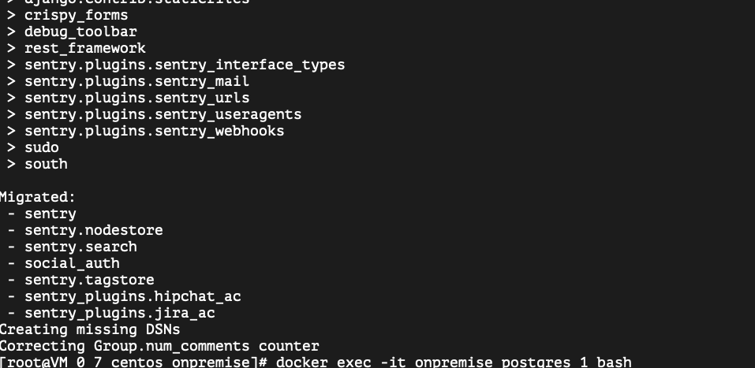
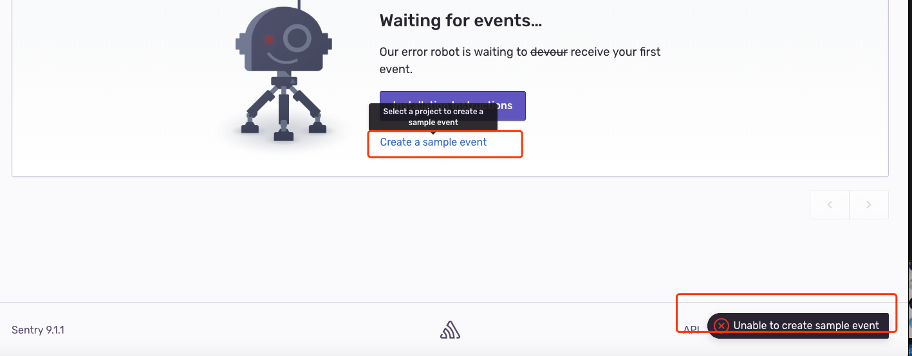

使用Dock搭建Sentry服务
搭建环境
- CentOS 7.5 64 位
- docker: 18.09.6
- docker-compose: 1.24.0
- sentry: sentry 9.1-onbuild
搭建步骤
安装
docker、docker-compose、git执行
systemctl start docker启动 docker。1
$ systemctl start docker
⚡️: 可执行
systemctl enable docker将启动 docker 加入开机自启1
$ systemctl enable docker
克隆
sentry到本地。git clone https://github.com/getsentry/onpremise.git。1
$ git clone https://github.com/getsentry/onpremise.git
执行
cd onpremise进入 onpremise 文件夹。执行
docker volume create --name=sentry-data && docker volume create --name=sentry-postgres1
$ docker volume create --name=sentry-data && docker volume create --name=sentry-postgres
⚡️: 使用
docker volume创建本地数据库和 sentry 卷。执行
cp -n .env.example .env创建.env文件。1
$ cp -n .env.example .env
执行
docker-compose build构建并标记docker服务。1
$ docker-compose build
执行
docker-compose run --rm web config generate-secret-key- 生成密钥。将它添加到.env作为SENTRY_SECRET_KEY的值，还要将其添加到docker-compose.yml中。1
$ docker-compose run --rm web config generate-secret-key


执行
docker-compose run --rm web upgrade- 构建数据库。1
$ docker-compose run --rm web upgrade
⚡️: 官方文档 说这里会 使用交互式提示创建用户帐户 。在实际操作中却没有提示。::如果没有提示需要执行第 10 步::。
执行
docker exec -it onpremise_postgres_1 bash进入 docker 容器 执行 postgres bash 命令查看是否有数据。1
$ docker exec -it onpremise_postgres_1 bash

- 执行
psql -h 127.0.0.1 -d postgres -U postgres进入 postgres 数据库
1
$ psql -h 127.0.0.1 -d postgres -U postgres
- 执行
select * from sentry_project;查看 sentry_project 表是否有数据。
1
$ select * from sentry_project;
- 执行
select * from sentry_organization;查看 sentry_organization 表是否有数据。
1
$ select * from sentry_organization;
- 执行
ctrl + d退出 shell。
- 执行
如果没有数据需要添加， 执行
docker-compose run --rm web shell进入 sentry 的 web 的 shell 里面。初始化数据1
$ docker-compose run --rm web shell
- 执行
from sentry.models import Project。
1
$ from sentry.models import Project
- 执行
from sentry.receivers.core import create_default_projects。
1
$ from sentry.receivers.core import create_default_projects
- 执行
create_default_projects([Project])。
1
$ create_default_projects([Project])
- 执行
ctrl + d退出。

- 执行
执行
docker-compose run --rm web createuser创建用户。1
docker-compose run --rm web createuser

执行
docker-compose up -d- 构建启动容器。在浏览器中输入
[ip]:9000。如果没有错误，就应该能看到了。
安装碰到的问题
💥 在执行
docker-compose run --rm web upgrade的时候。可能会出现没有执行完就退出了终端。
🔨 解决方案: 需要重新执行上面的命令

💥 登录到项目后点击 Create a sample event 测试时， 会发现是失败的，而且这个时候在项目中产生的错误不会在这个 Issues 列表中展示。

🔨 解决方案:
参考：Waiting for events… Our error robot is waiting to devour receive your first event - #sentry
- 执行
docker exec -it onpremise_postgres_1 bash进入 docker 容器 执行 postgres bash 命令查看是否有数据。
1
$ docker exec -it onpremise_postgres_1 bash
- 执行
psql -h 127.0.0.1 -d postgres -U postgres进入 postgres 数据库
1
$ psql -h 127.0.0.1 -d postgres -U postgres
- 执行下面 SQL 语句后。在浏览器中点击 Create a sample event 就好了，也正常记录 Issue 了。
1
2
3
4
5
6
7
8
9create or replace function sentry_increment_project_counter( project bigint, delta int) returns int as $$ declare new_val int;
begin loop update sentry_projectcounter set value = value + delta where project_id = project returning value into new_val;
if found then return new_val;
end if;
begin insert into sentry_projectcounter(project_id, value) values (project, delta) returning value into new_val;
return new_val;
exception when unique_violation then end;
end loop;
end $$ language plpgsql;- 执行
install_url to use ShareThis. Please set it in _config.yml.